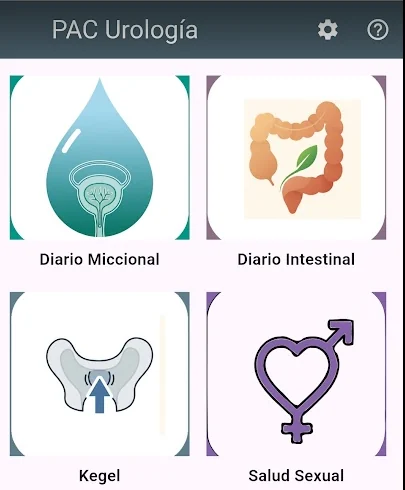
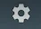
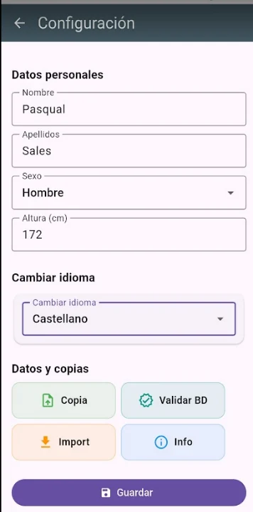
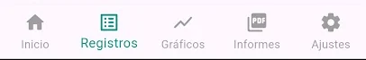

Manual d’ús
Guia ràpida d’inici
Primers passos per configurar l’app, començar a registrar dades i generar informes.

Per començar
Primers passos

1. Entra a configuració
Prem la icona de configuració i introdueix les dades personals que apareixeran als informes.

2. Revisa dades i còpies
Des de configuració pots escollir l’idioma, fer una còpia de seguretat, validar una base de dades abans d’importar-la i consultar la informació general de registres.
Finalment prem guardar per sortir.

3. Entén el mode nit
Per exemple, una micció a les 3:00 pot ser de dia si estaves despert, o de nit si estaves al llit.
Navegació general

Exportació d’informes
Als apartats de gràfics i informes pots generar un PDF per compartir-lo amb professionals sanitaris.
El PDF es pot enviar per correu, WhatsApp, Drive o imprimir-lo.